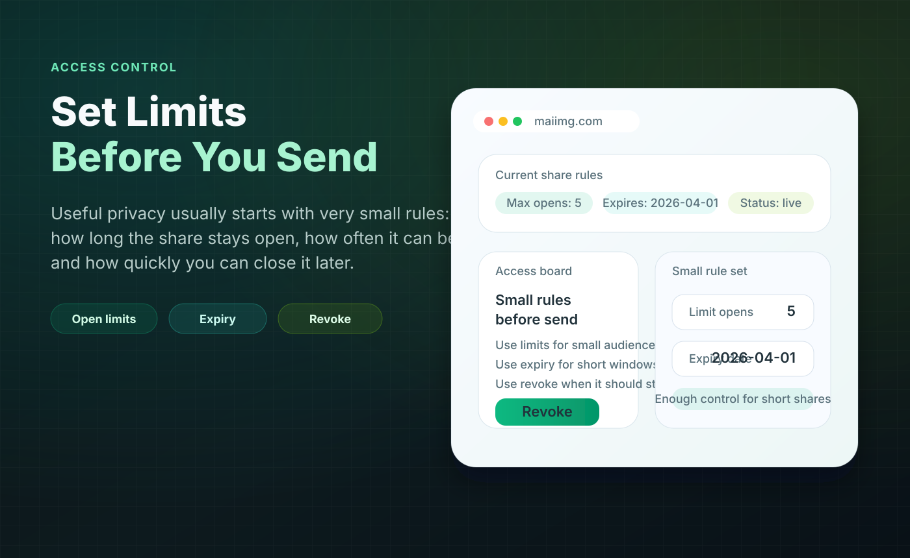

Small delivery checks
You sent the photos. Did anyone open them?
For a client preview, family batch, school event, or small seller photo set, the most useful feedback is often binary: someone opened the link, or nobody has yet. That tells you whether to follow up, resend, or wait.
